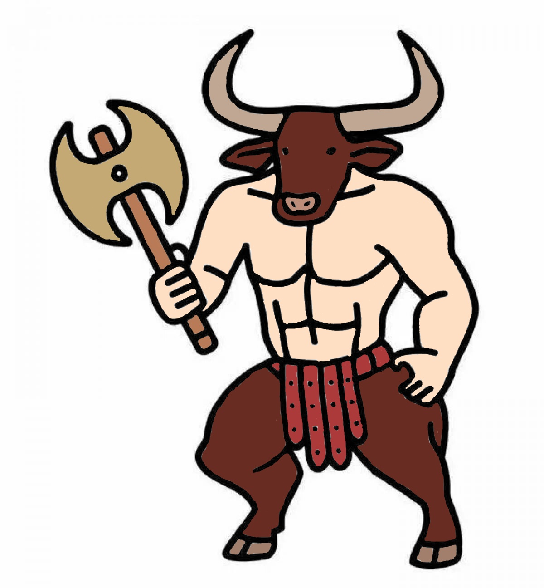

Мінотавр був сином Пасіфая, дружини критського царя Міноса, і бика, якого Зевс послав до Міноса. За іншою версією міфу, Пасіфая закохалася в бика, і за допомогою майстра Дедала створила спеціальну конструкцію, в якій могла з’єднатися з твариною, що й стало причиною народження Мінотавра — чудовиська з людським тілом і биковою головою.
Щоб утримати Мінотавра, цар Мінос наказав Дедалу побудувати величезний лабіринт, що став непрохідним і невідомим навіть його творцю. Мінотавр був замкнений у цьому лабіринті, де жив і харчувався людськими жертвами — молодими людьми, яких Мінос щорічно вимагав від Афін як помсту за смерть свого сина Андрогая, загиблого в Афінах.
Мінотавр уособлює хаос і руйнування, а також небезпеку, що приходить із неконтрольованими бажаннями й інстинктами. Лабіринт, у якому він жив, символізує пастку, яку створює людина для себе через свої страхи, пристрасті та боротьбу з невідомим. Водночас історія Тесея і Мінотавра є історією перемоги розуму і мужності над темрявою і варварством.
Мінотавр став відомим образом у мистецтві, літературі та культурі. У мистецтві він зображений як потвора з головою бика і тілом людини, часто в контексті лабіринту або боротьби з героєм. Його образ асоціюється з нестримними інстинктами та темними сторонами людської природи. Мінотавр залишив яскравий слід у багатьох літературних творах, таких як твори Данте чи Пікассо, де він часто є символом внутрішнього конфлікту.
